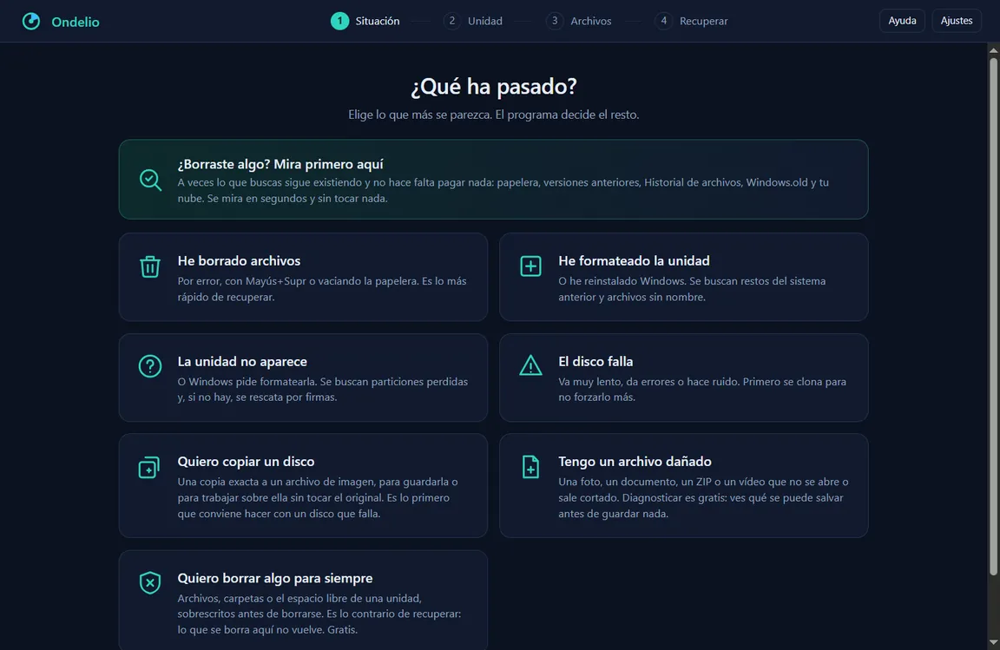
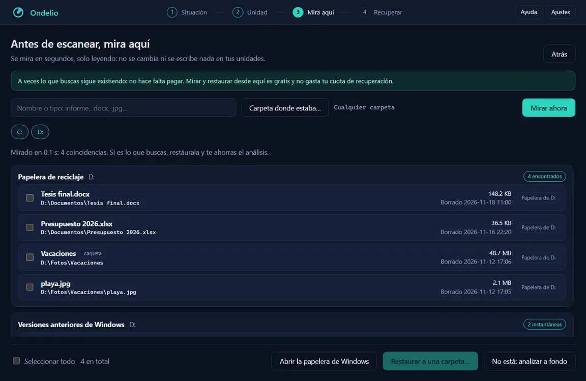
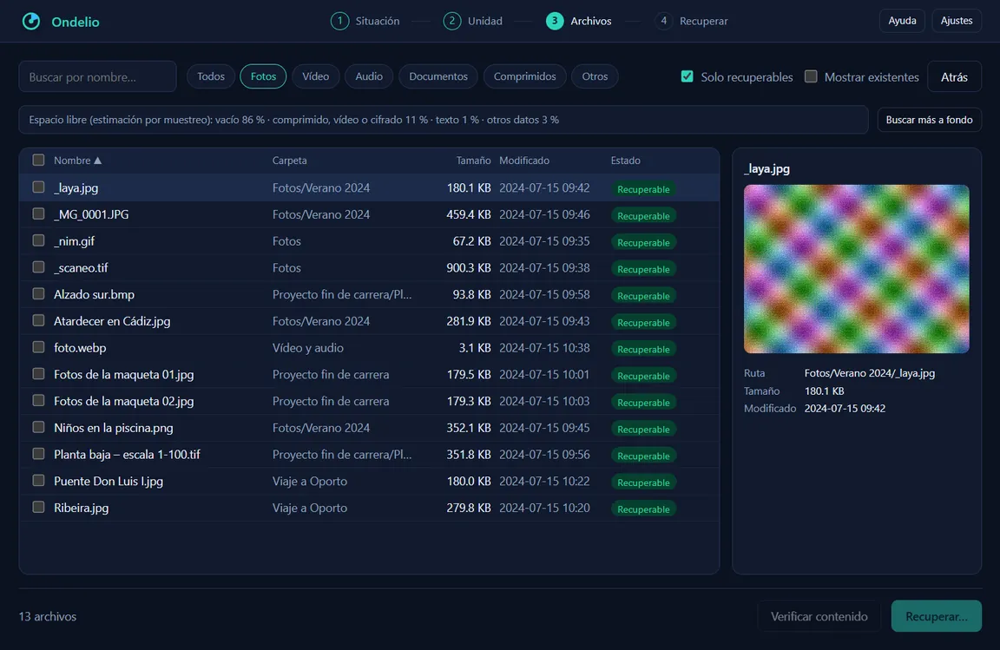
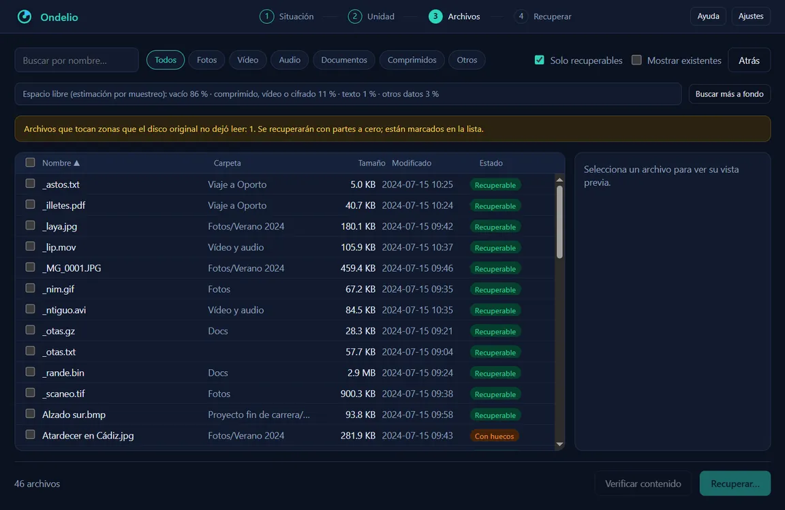
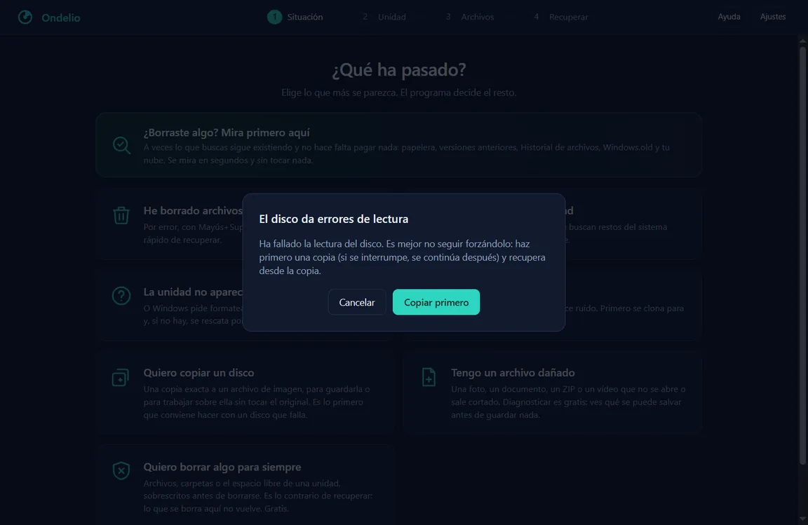
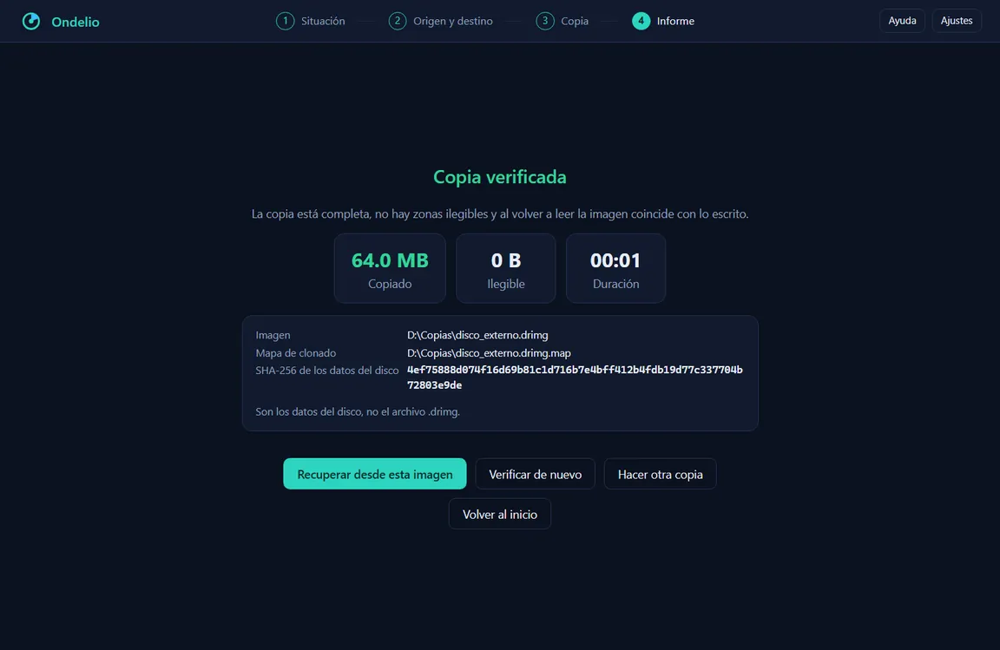
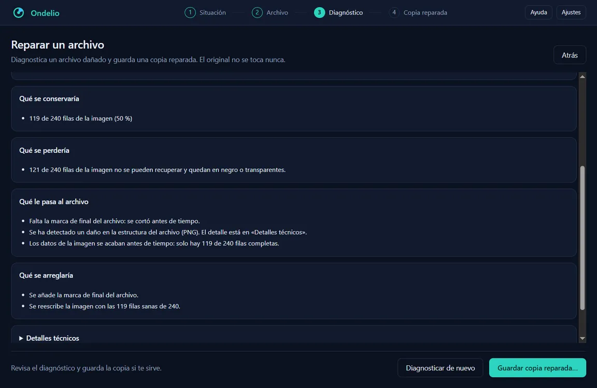
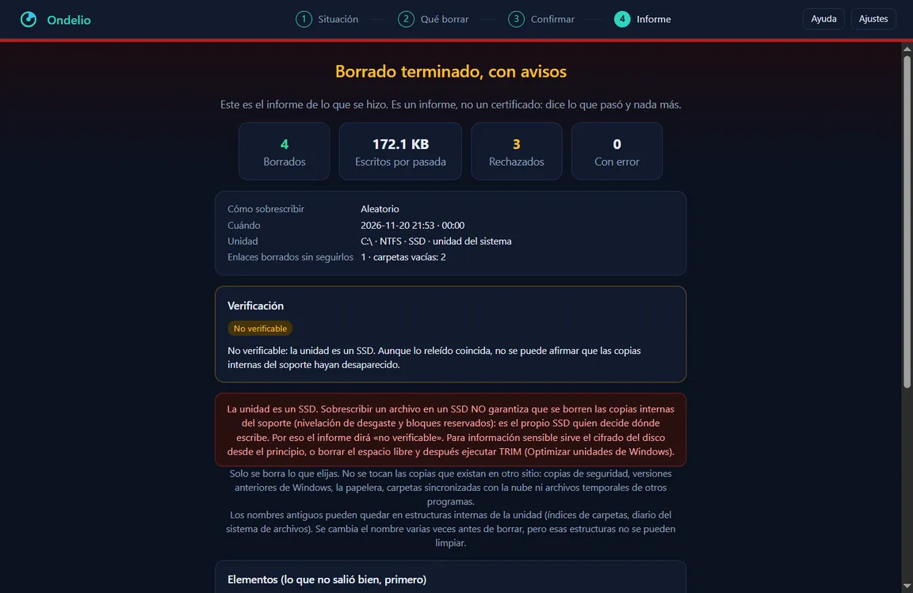
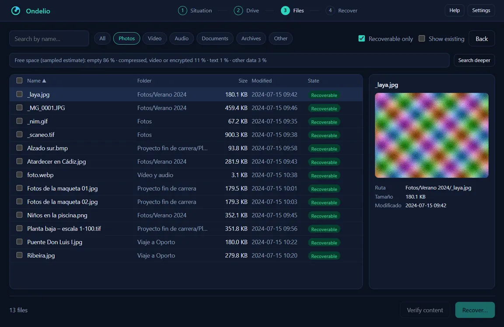

Notre propre application · Bientôt sur le Microsoft Store
Ondelio
Un programme pour Windows 10 et 11 qui récupère, copie, répare et efface en toute sécurité ce qui se trouve sur vos disques. Et qui vous dit la vérité sur chaque fichier. Ce n'est pas non plus une commande — c'est le nôtre.
Ce qu'est Ondelio
Ondelio aide quand quelque chose a été perdu ou s'est cassé sur un disque, une clé USB ou une carte : fichiers supprimés par erreur, lecteur formaté, disque qui n'apparaît plus ou qui commence à lâcher, photo ou document qui ne s'ouvre pas. Inutile de s'y connaître en disques : l'écran d'accueil demande « Que s'est-il passé ? » et, selon votre choix, le programme décide comment analyser. Il affiche ensuite une liste de fichiers avec aperçu, vous dit clairement ce qui est récupérable ou non, et récupère ce que vous choisissez vers un autre lecteur.
Outre la récupération, la même suite copie les disques défaillants, répare les fichiers endommagés — photos, documents Office, ZIP et vidéos — et efface en toute sécurité ce que vous ne voulez plus voir revenir. Elle fonctionne entièrement sur votre machine : elle ne collecte aucune donnée et n'a pas besoin d'Internet, et son moteur de récupération a été développé de zéro, sans code d'autres programmes de récupération.
Captures d'écran









Captures du programme en développement, avec des fichiers et des disques d'exemple. Les fonctions prévues qui ne sont pas encore disponibles n'apparaissent pas ici, et le design final peut changer.
Il dit la vérité, même quand ce n'est pas ce que vous voulez entendre
Aucun programme ne peut récupérer des données déjà écrasées ni, en général, ce qui a été supprimé sur un SSD avec TRIM. Ondelio le dit clairement et vous avertit quand il en voit les signes, au lieu de promettre l'impossible. Chaque fichier porte un état — Récupérable, Partiel, Écrasé ou Douteux — et son contenu peut être vérifié avant la récupération (Vérifié, Structure correcte ou Endommagé) : vous savez à quoi vous attendre avant d'enregistrer quoi que ce soit.
Et il ne fait pas de mal : pour récupérer, il ouvre les disques en lecture seule et ne vous laisse pas enregistrer le résultat sur le lecteur qu'il analyse, car un fichier supprimé reste là tant que rien de nouveau ne l'écrase. Les rares fonctions qui écrivent sur un disque sont séparées, le signalent et demandent confirmation. Le réparateur travaille toujours sur une nouvelle copie et vous dit ce qui est conservé, ce qui est perdu et ce qui ne peut pas être garanti. Et l'effacement sécurisé donne un rapport, pas un « certificat » : sur un SSD ou une clé USB, il avertit que l'écrasement ne garantit pas l'effacement des copies internes du support.
Ce qui est déjà fait
Ce qui n'existe pas encore
En développement et pas encore disponible : la copie de disque à disque, l'effacement d'un disque entier, une section dédiée aux clés USB et cartes (avec détection de fausses clés et photos RAW d'appareil), l'alerte sur l'état du disque, la récupération d'un document non enregistré, les miniatures en dernier recours, l'aide face aux rançongiciels et une édition portable sur USB. Tant qu'elles n'existent pas, nous ne les tenons pas pour acquises.
Gratuit pour vérifier, payant pour l'avancé
Analyser et voir ce qui est récupérable est gratuit, avec aperçu ; de même pour « Regardez ici », la copie d'un disque vers une image, le diagnostic de fichiers endommagés et l'effacement de fichiers, dossiers et espace libre. Récupérer jusqu'à 500 Mo au total est gratuit, pour vérifier que ça marche. Les fonctions avancées (récupérer sans cette limite, cloner, enregistrer la copie réparée et effacer des disques entiers) seront des modules payants sur le Microsoft Store, avec un pack Pro. Annuler, vérifier et les rapports ne sont jamais limités.
Comment nous l'avons testé, et où sont les limites
Lors de tests en laboratoire, avec des images de disque créées pour l'occasion (suppression sous FAT32, NTFS et exFAT, formatage rapide, table de partitions détruite et récupération par contenu), les fichiers récupérés correspondaient octet pour octet aux originaux. Ce sont des tests de laboratoire, pas une promesse pour chaque disque : chaque cas réel dépend de ce qui a été écrit ensuite.
Pour l'instant, il n'analyse pas les disques chiffrés avec BitLocker ni n'extrait les fichiers chiffrés par EFS, et un disque physiquement endommagé peut nécessiter un service spécialisé : c'est pourquoi Ondelio recommande de le copier d'abord. Les traductions en français, allemand, italien et portugais sont encore en cours de peaufinage.